SELL
売却するという選択。
土地を現金化し、権利関係を整理する。将来の選択肢を別のかたちへ移す、分かりやすく合理的な考え方です。
RE:
選択肢は、ひとつではない。売却するのか、残すのか。この提案では、「残す」という選択にフォーカスしていきます。
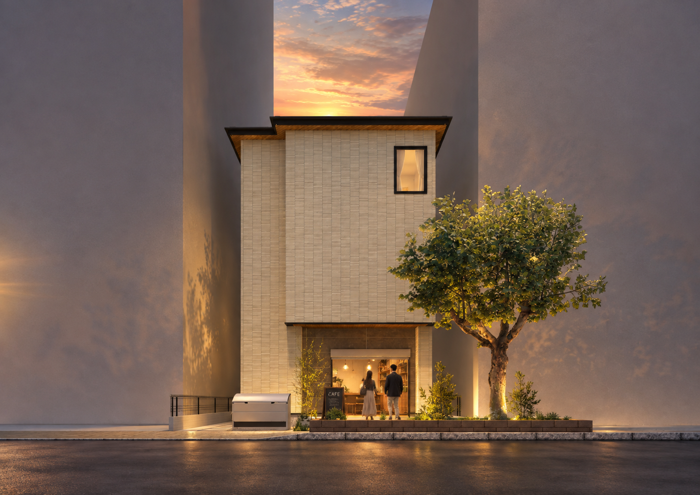
京都駅徒歩圏という希少性。暮らす場所としても、商いの場所としても、日々の選択肢が広がる立地です。
駅と街の気配をすぐそばに感じながら、住まいと店舗が共存できる場所。土地がすでに持っている力を、これからの使われ方へつないでいきます。
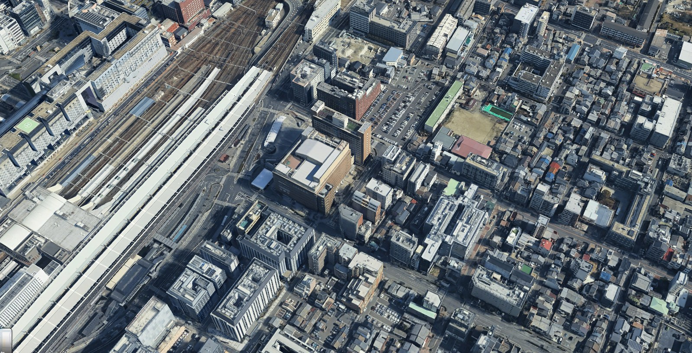
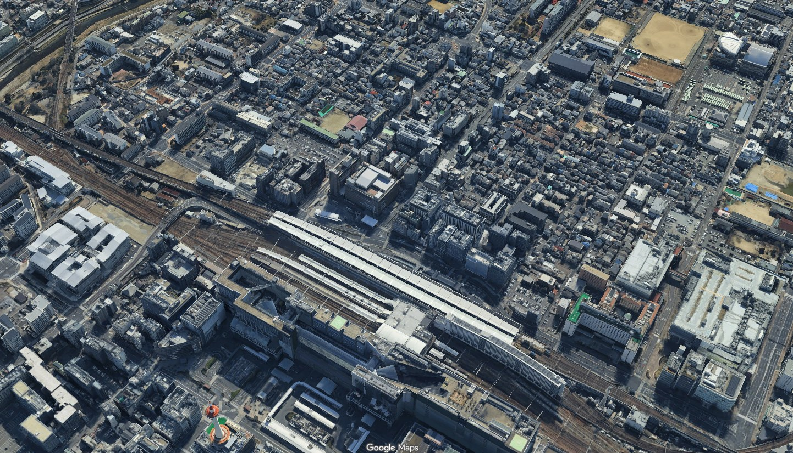
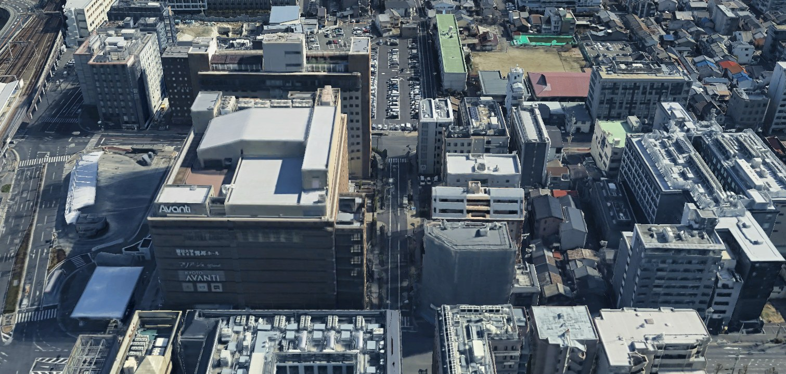
売ることにも、残すことにも理由がある。どちらかを最初から正解にせず、この土地のこれからを考えます。
SELL
土地を現金化し、権利関係を整理する。将来の選択肢を別のかたちへ移す、分かりやすく合理的な考え方です。
KEEP
土地を手放さず、使われ続ける場所へ変えていく。暮らしと店が生まれ、次の世代へつないでいく考え方です。
この土地を残すとしたら、どんな使われ方があり、どんな風景が生まれ、どんな時間を次へ渡していけるのか。住まいと店舗を組み合わせた建築案を通して、その可能性をひとつの景色として描いていきます。
線から、風景へ。
ラフな検討から、植栽・店舗・街との関係を重ね、完成後の景色へ近づけていきます。
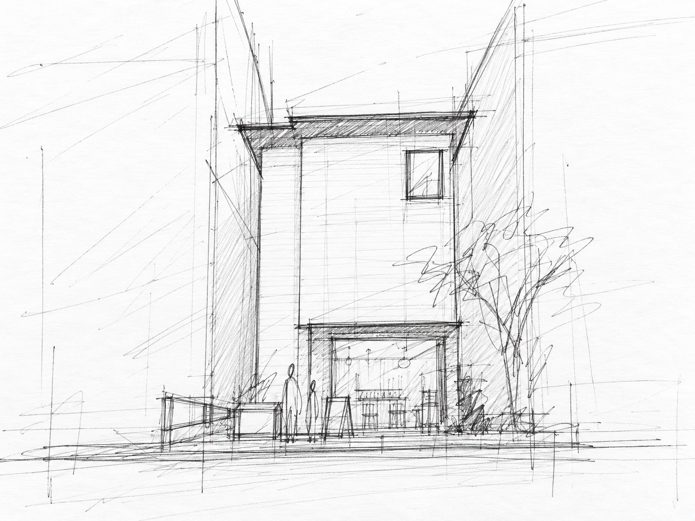
まずは建物のボリュームと、道路から見える正面のバランスを確認します。
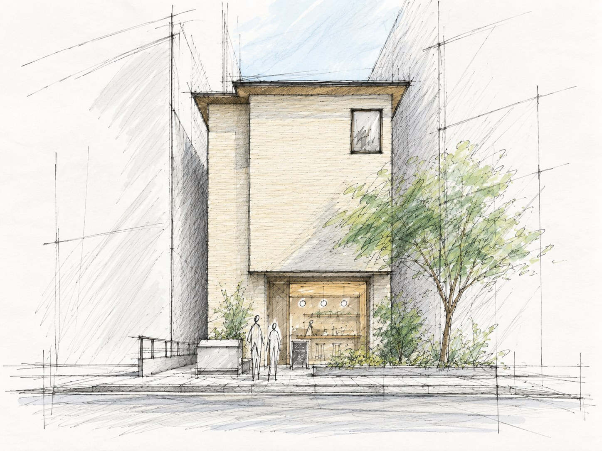
植栽や店舗の灯り、人の気配を加え、建物が街にどう見えるかを整えていきます。
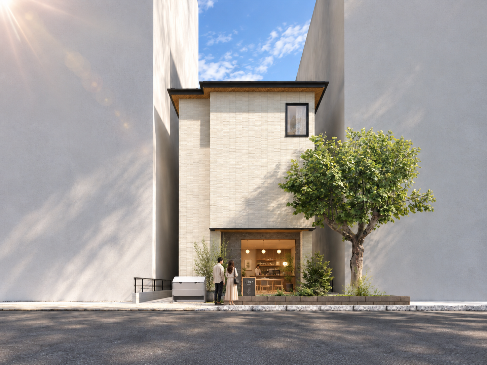
検討した輪郭や外構の考え方を、完成後のイメージとして確かめます。
1階に店舗、上階を中心に5戸の1LDK。住宅だけに閉じず、街との小さな接点をつくる計画です。
駅前だからこそ、ただ寝るだけの部屋にはしない。暮らしに余白のある1LDKと、街にひらく小さな店舗を組み合わせます。
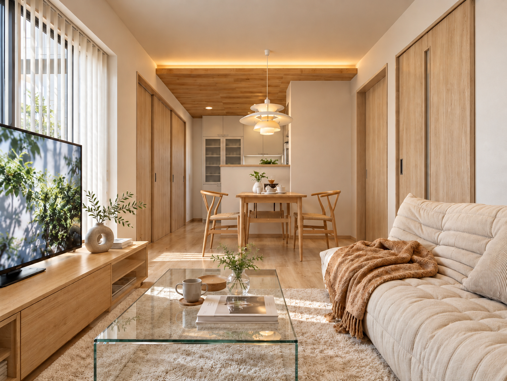
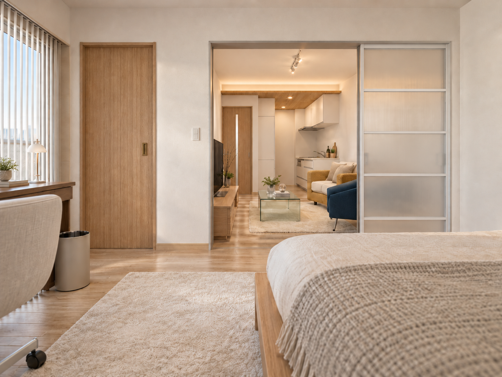
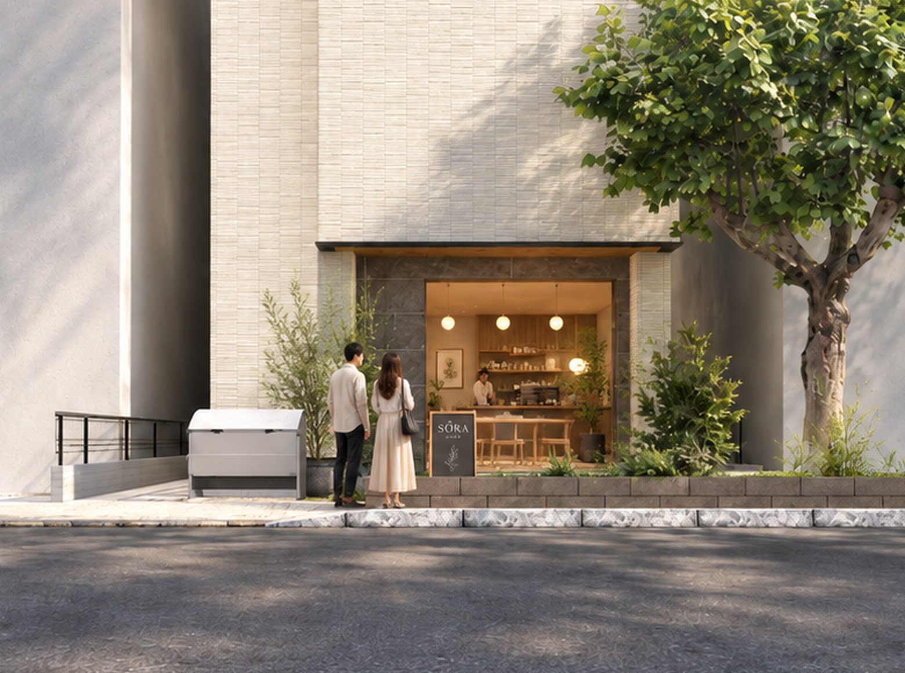
154.88㎡の敷地に、店舗と5つの住まいを重ねる。限られた間口と奥行きを、ひとつずつ丁寧に読み解いた計画です。
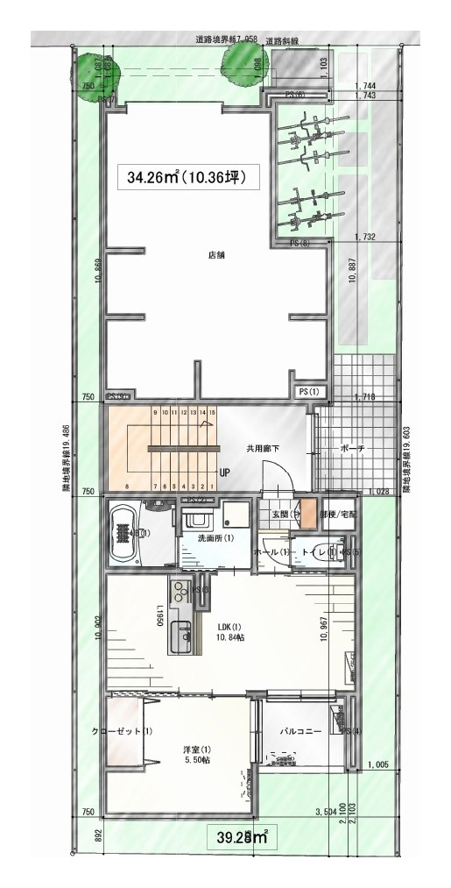
2筆を一体の敷地として捉え、店舗、住宅、共用動線、駐輪スペースを整理します。
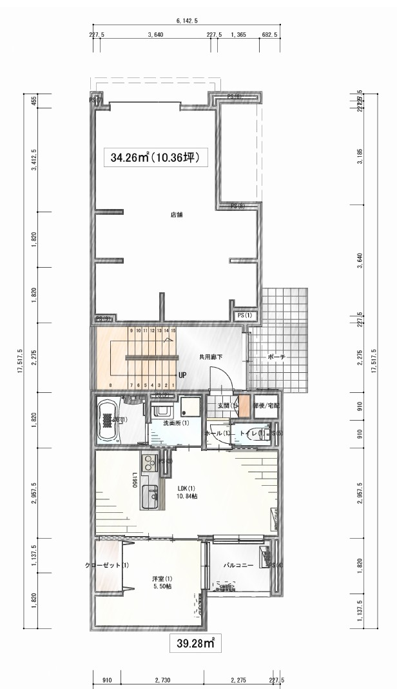
街に近い側へ店舗を設け、その奥に1LDKを配置。住まいと商いの距離感を整えます。
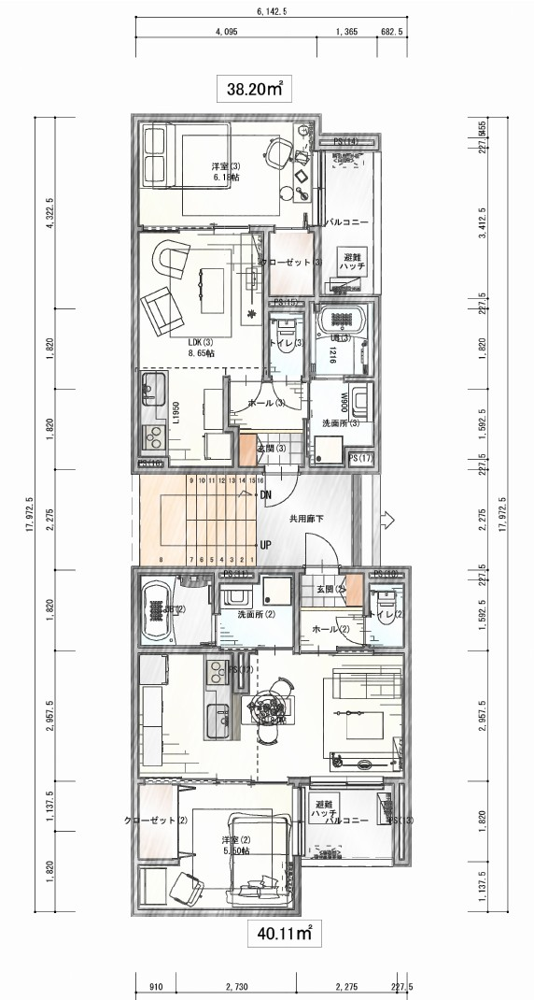
1LDKを2戸配置。日常の居場所を分けられる、約38〜40㎡台の住戸を想定しています。
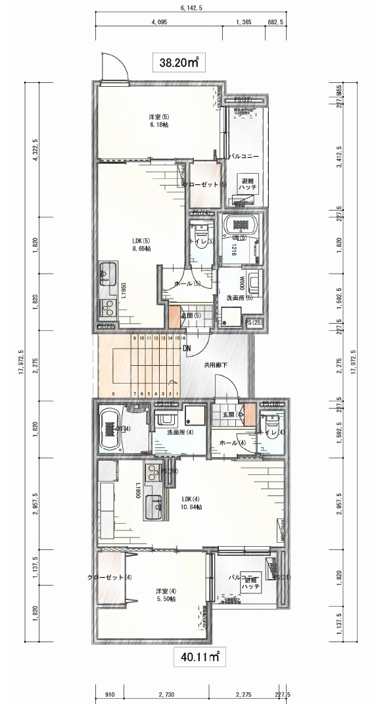
上階にも1LDKを2戸配置。建物全体で5つの暮らしを受け止めます。
敷地は2筆。そのうち122.08㎡の一筆が姉妹共有です。
現在の権利関係を整理することは、この土地の将来を考えるうえで大切な入口です。誰が、どのように持ち、どう次へ渡していくのか。土地と建物をひとつの資産として見つめ直します。
建物が完成することだけが、この計画の景色ではありません。この場所で、新しい暮らしが始まり、店に人が集まり、土地が使われ続けていく。その先の時間まで想像します。
土地を手放さず、次へ残していく。
ここに、新しい5つの日常が生まれる。
1階のお店に、人と街の新しい接点が生まれる。
時間とともに、この場所ならではの風景が育っていく。
今の世代から、その次の世代へ。
今のためだけではなく、この土地を次の世代へどう渡していくかまで考える。
この計画で大切にしたいのは、今の代だけで完結する価値ではありません。土地を守り、使われ続ける状態をつくり、次の世代がまた自分たちの意思で選べる余地を残す。そこまで含めて、この土地のこれからを考えます。
土地と権利関係を整理し、これからを選べる状態へ。
住まいと店が生まれ、土地を手放さず使い続ける。
次の世代が、また自分たちの意思で選べる資産へ。
RE:
売ることも、残すことも、どちらも選択肢。だからこそ、残す場合にどんな未来が描けるのかを、イメージするお手伝いをさせていただきます。